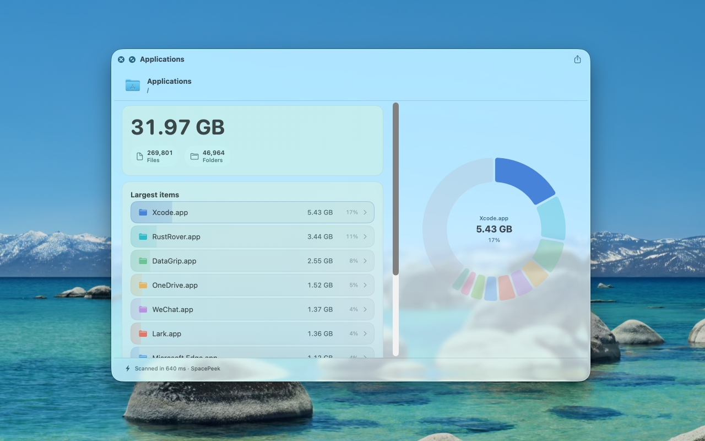
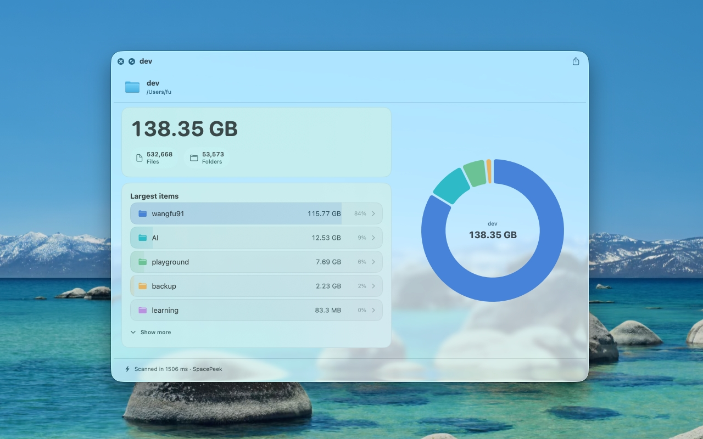
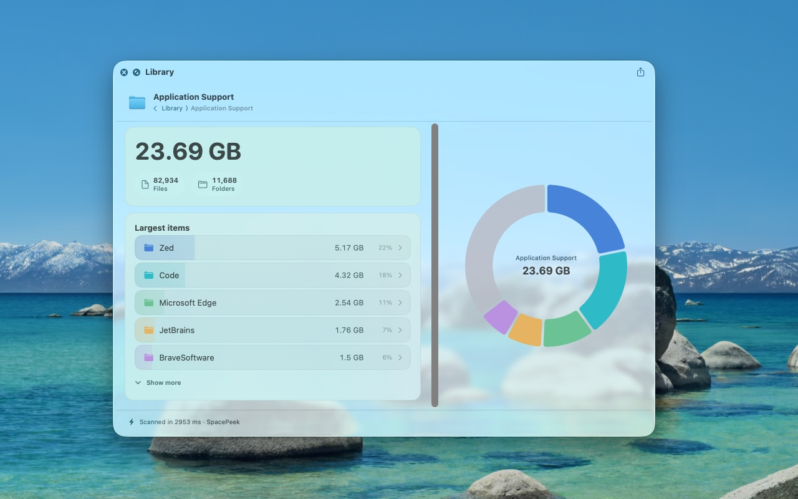
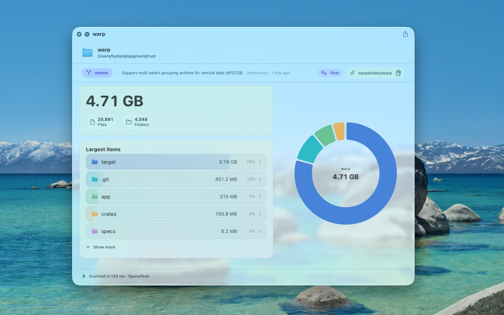
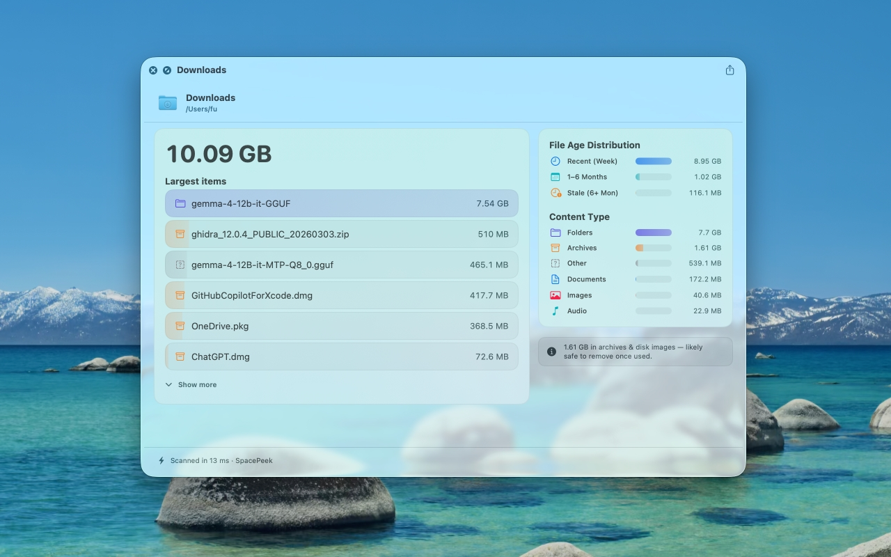

Fast Local Scanning
Press Space on a selected Finder folder to see counts and storage details without opening a heavier disk utility.
macOS Utility
Select a folder in Finder, press the Space Bar, and instantly open SpacePeek in Quick Look. A high-performance Rust engine and polished SwiftUI interface make folder size previews feel immediate, clear, and effortless.
Press Space on a selected Finder folder to see counts and storage details without opening a heavier disk utility.
See total size, item counts, and the folders or files using the most space so cleanup decisions are easier.
Move through nested folders and inspect deeper storage distribution inside the same Quick Look preview.
Folder contents and scan results stay on your Mac. SpacePeek does not upload, track, or process your files remotely.
Get SpacePeek
Download SpacePeek from the Mac App Store after the review process is complete.
How It Works
Choose any folder in Finder that you want to inspect.
Quick Look opens SpacePeek directly from Finder with no extra setup.
Review the size breakdown, item counts, and top space consumers right away.
App Preview
Browse the Quick Look experience and see how SpacePeek turns folder storage into something easy to understand.





Support URL
Contact the developer directly for bug reports, App Store review questions, or general support.
Send EmailOpen a public issue for reproducible bugs, edge cases, or feature requests.
Open a GitHub IssueRequires macOS 14.0 or later. All processing happens locally on your Mac, with no uploaded folder contents or scan results.
Read Privacy PolicyHow do I launch it? Select a folder in Finder, then press Space.
Does it upload data? No. SpacePeek scans and previews locally only.
Where can I report issues? Use email support or GitHub Issues.